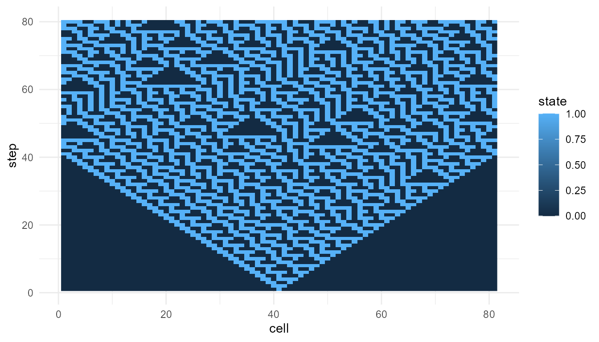
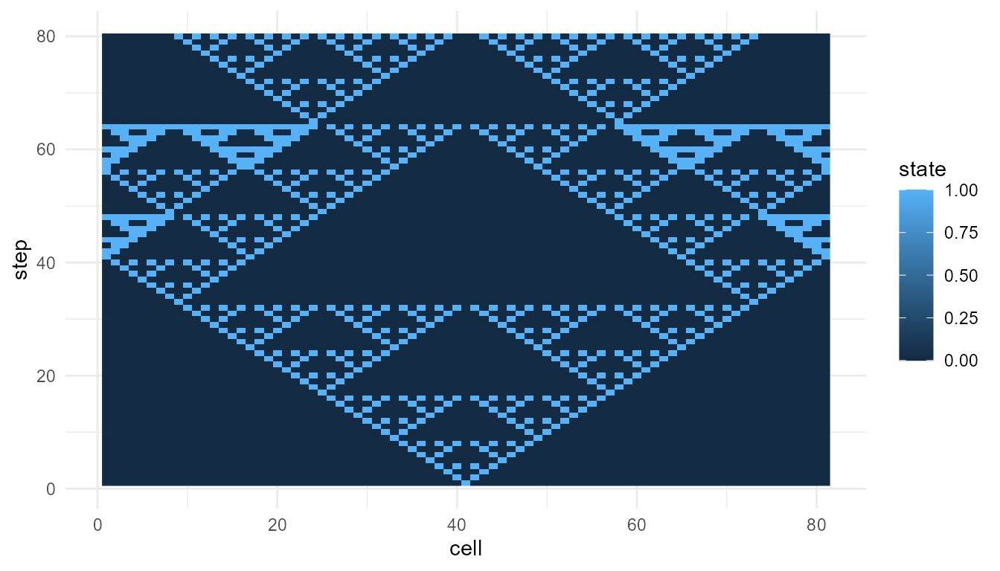
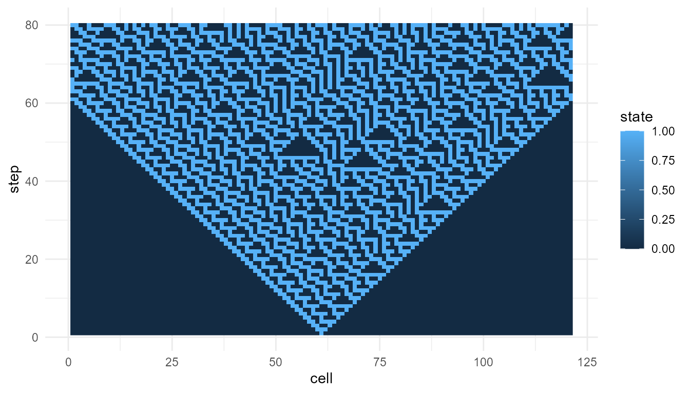
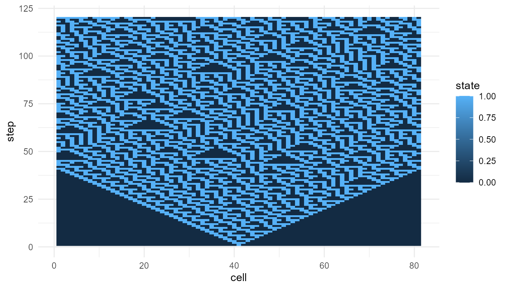
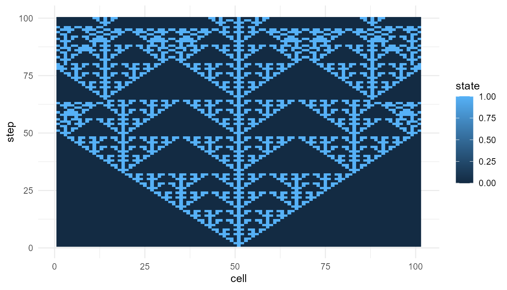

Cellular Automata Tutorial
Source:vignettes/cellular-automata-tutorial.Rmd
cellular-automata-tutorial.RmdPurpose
This tutorial introduces simulate_cellular_automata().
Cellular automata are useful because they show how simple local rules
can produce unexpectedly rich global patterns.
In this tutorial, you will learn how to:
- run a basic cellular automaton;
- inspect the output;
- visualize cellular automata patterns;
- compare Rule 30 and Rule 110;
- summarize outputs using
measure_emergence(); - interpret cellular automata as simplified models of emergence.
What the function represents
A cellular automaton is a grid of cells that update over time according to a rule.
In an elementary cellular automaton:
- cells are arranged in one dimension;
- each cell has a binary state, usually
0or1; - each cell updates based on itself and its nearby neighbors;
- the same rule is applied repeatedly across the system.
The function simulate_cellular_automata() creates this
kind of simplified model.
The main idea is:
Local update rules can generate global space-time patterns.
Main arguments
| Argument | Meaning |
|---|---|
rule |
The cellular automaton rule number |
n_cells |
Number of cells in the row |
steps |
Number of time steps to simulate |
The rule argument is especially important. Different
rules can produce very different global patterns, even when the number
of cells and steps stays the same.
Basic simulation: Rule 30
Rule 30 is often used to show how a simple deterministic rule can produce irregular-looking patterns.
rule30 <- simulate_cellular_automata(
rule = 30,
n_cells = 81,
steps = 80
)
head(rule30)
#> step cell state
#> 1 1 1 0
#> 2 1 2 0
#> 3 1 3 0
#> 4 1 4 0
#> 5 1 5 0
#> 6 1 6 0Inspect the output
The output is a data frame.
str(rule30)
#> 'data.frame': 6480 obs. of 3 variables:
#> $ step : int 1 1 1 1 1 1 1 1 1 1 ...
#> $ cell : int 1 2 3 4 5 6 7 8 9 10 ...
#> $ state: int 0 0 0 0 0 0 0 0 0 0 ...The main columns usually include:
| Column | Meaning |
|---|---|
step |
Time step |
cell |
Cell position |
state |
Cell state, usually 0 or 1
|
This structure makes it easy to visualize the pattern across cells and time.
Plot Rule 30
plot_emergence_sim(
rule30,
x = "cell",
y = "step",
value = "state",
type = "raster"
)
Interpretation of Rule 30
The pattern is generated by repeatedly applying a local rule. No cell knows the global pattern. No central controller designs the structure.
This illustrates a core idea of emergence:
A simple local rule can generate a complex system-level pattern.
Rule 30 is useful for teaching because the output can look surprisingly irregular even though the rule is deterministic.
Rule 110
Rule 110 is another important cellular automaton rule. It is often discussed because it can produce structured patterns associated with computation-like behavior.
rule110 <- simulate_cellular_automata(
rule = 110,
n_cells = 81,
steps = 80
)
head(rule110)
#> step cell state
#> 1 1 1 0
#> 2 1 2 0
#> 3 1 3 0
#> 4 1 4 0
#> 5 1 5 0
#> 6 1 6 0
plot_emergence_sim(
rule110,
x = "cell",
y = "step",
value = "state",
type = "raster"
)
Interpretation of Rule 110
Rule 110 often produces more visibly structured patterns than Rule 30. These structures may persist, move, or interact across time.
The important teaching point is not that Rule 110 is alive or conscious. Rather, it shows that very simple rule-based systems can generate patterns with rich dynamics.
Compare metrics
The function measure_emergence() provides simple
emergence-oriented summaries.
rbind(
rule30 = measure_emergence(
rule30,
value_col = "state",
time_col = "step"
),
rule110 = measure_emergence(
rule110,
value_col = "state",
time_col = "step"
)
)
#> n unique_states shannon_entropy mean_value sd_value
#> rule30 6480 2 0.9612044 0.3845679 0.4865305
#> rule110 6480 2 0.8660753 0.2879630 0.4528487
#> temporal_variability mean_absolute_change
#> rule30 0.1640558 0.07110486
#> rule110 0.1618021 0.03469292Interpreting the metrics
The metrics summarize selected features of the cellular automata outputs, such as diversity, variability, or temporal change.
They are useful for comparison, but they should not be treated as a complete measure of emergence.
A careful interpretation is:
The metrics help compare patterns produced by different rules.
An overstatement would be:
The metrics prove that one rule is truly more emergent.
The first statement is appropriate. The second is too strong.
Compare another rule
Try Rule 90, which often produces a more regular nested pattern.
rule90 <- simulate_cellular_automata(
rule = 90,
n_cells = 81,
steps = 80
)
plot_emergence_sim(
rule90,
x = "cell",
y = "step",
value = "state",
type = "raster"
)
Compare three rules
rbind(
rule30 = measure_emergence(
rule30,
value_col = "state",
time_col = "step"
),
rule90 = measure_emergence(
rule90,
value_col = "state",
time_col = "step"
),
rule110 = measure_emergence(
rule110,
value_col = "state",
time_col = "step"
)
)
#> n unique_states shannon_entropy mean_value sd_value
#> rule30 6480 2 0.9612044 0.3845679 0.4865305
#> rule90 6480 2 0.5776539 0.1375000 0.3444010
#> rule110 6480 2 0.8660753 0.2879630 0.4528487
#> temporal_variability mean_absolute_change
#> rule30 0.1640558 0.07110486
#> rule90 0.1257905 0.08798250
#> rule110 0.1618021 0.03469292Interpretation of rule comparison
All three simulations use the same number of cells and the same number of steps. The main difference is the local update rule.
This makes cellular automata useful for teaching parameter sensitivity:
Changing the rule can change the global pattern.
The components are simple, but the system-level behavior can vary greatly.
Change the number of cells
The argument n_cells controls the width of the cellular
automaton.
rule30_wide <- simulate_cellular_automata(
rule = 30,
n_cells = 121,
steps = 80
)
plot_emergence_sim(
rule30_wide,
x = "cell",
y = "step",
value = "state",
type = "raster"
)
Interpretation of n_cells
Increasing n_cells gives the pattern more space to
develop horizontally. This can make global structure easier to see.
However, the local rule is unchanged. The same rule is being applied across a larger system.
Change the number of steps
The argument steps controls how long the system
evolves.
rule30_long <- simulate_cellular_automata(
rule = 30,
n_cells = 81,
steps = 120
)
plot_emergence_sim(
rule30_long,
x = "cell",
y = "step",
value = "state",
type = "raster"
)
Interpretation of steps
Increasing steps allows the pattern to unfold for a
longer period. This is important because emergent patterns often become
visible only through repeated updating over time.
The system-level structure is not present all at once. It develops through iteration.
Suggested exercises
Try modifying the examples above.
experiment <- simulate_cellular_automata(
rule = 150,
n_cells = 101,
steps = 100
)
plot_emergence_sim(
experiment,
x = "cell",
y = "step",
value = "state",
type = "raster"
)
Questions to consider:
- How does Rule 30 differ from Rule 110?
- Which rules produce regular-looking patterns?
- Which rules produce irregular-looking patterns?
- What happens when you increase
n_cells? - What happens when you increase
steps? - Do the metrics match what you see in the plots?
Responsible interpretation
Cellular automata are simplified educational models. They are useful because they make the relationship between local rules and global patterns easy to observe.
It is better to say:
The simulation illustrates how local update rules can generate emergent patterns.
than:
The simulation fully explains emergence in real systems.
Cellular automata are powerful teaching tools, but they are highly abstract.
Key takeaway
simulate_cellular_automata() helps users explore how
simple local rules can generate complex global patterns.
Rule 30 shows how deterministic rules can produce irregular-looking structure. Rule 110 shows how simple rules can produce richer, computation-like patterns. Together, they demonstrate one of the central lessons of emergence:
Global structure can arise from repeated local updating without central control.